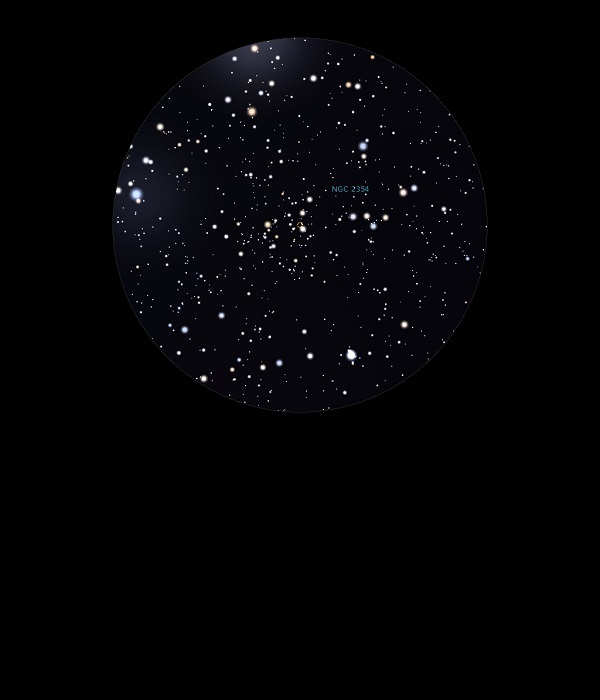

NGC 2354
Open
Cluster in Canis Major
NGC 2354
Mag 6.5
01/03/14
Very faint and
sparse Open Cluster, at least in my 12mm eyepiece low down
on the Southern horizon just above the trees
26/01/17
This is a new one, I'm observing the members of this large
and ragged Open Cluster through the very fine outer branches
of the apple tree!
Difficult therefore to get a true feel of its size
Perhaps not the best observing technique, but rather fun, an
Eclipsing Open Cluster